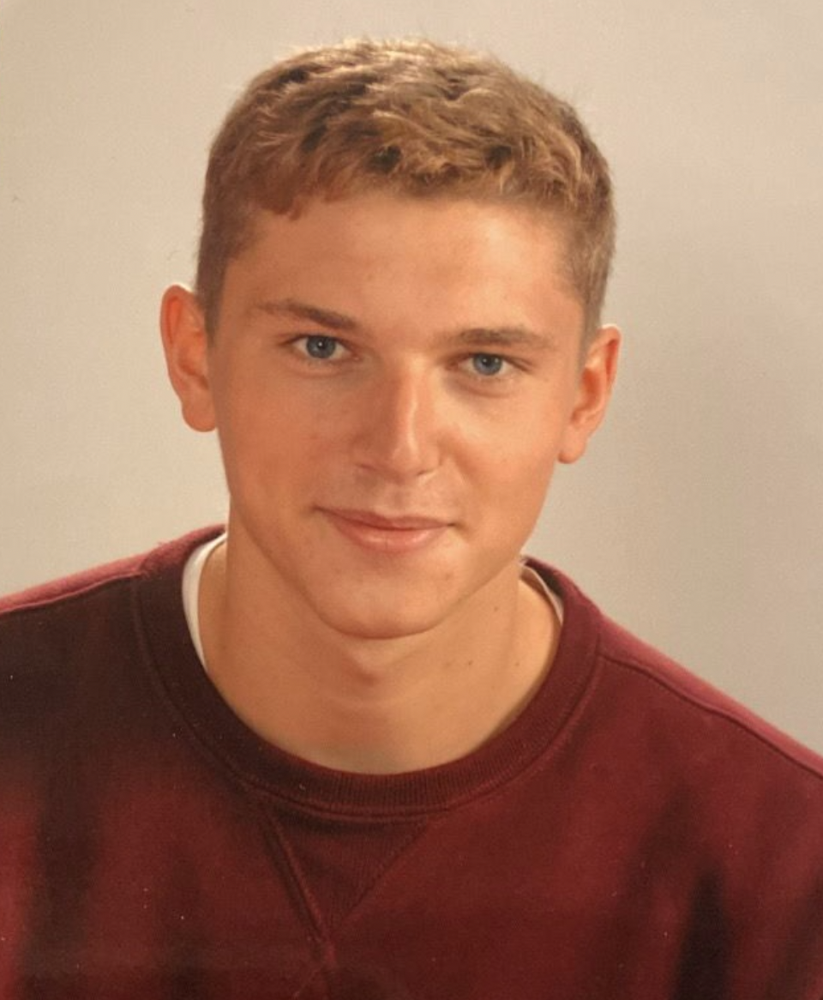

Ingénieur d'étude et d'affaires — Projets & Ouvrages Spéciaux
Concevoir, dimensionner et industrialiser des systèmes mécaniques complexes pour les grands projets offshore, navals et énergétiques.

Ingénieur en génie mécanique & matériaux, diplômé de SeaTech — École d'Ingénieurs du Groupe INP de Toulon, passionné par les sciences et la mer. Je trouve ma motivation dans des projets concrets et ambitieux, où technique, rigueur et travail d'équipe se rejoignent.
Aujourd'hui Ingénieur d'étude et d'affaires chez Eiffage Energie Systèmes, je pilote des projets offshores de grande envergure — conception, gestion de sous-traitance, relation client — dans un environnement où la précision et la fiabilité sont primordiales.